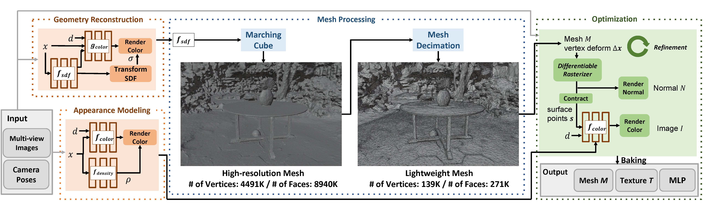
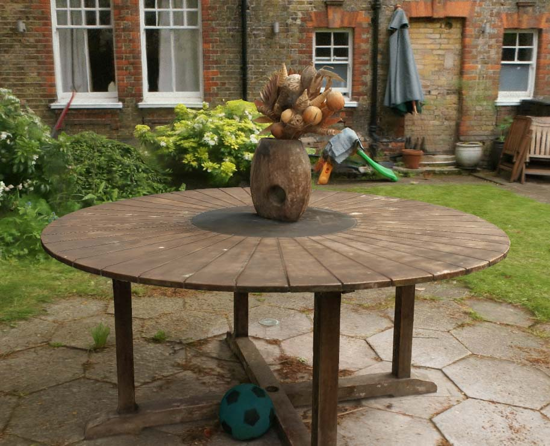
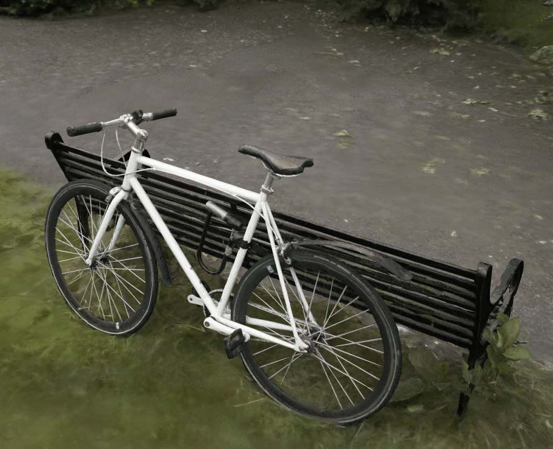
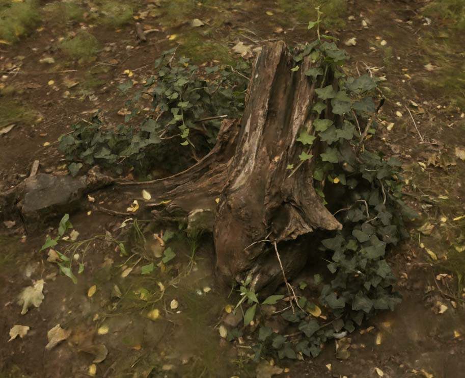
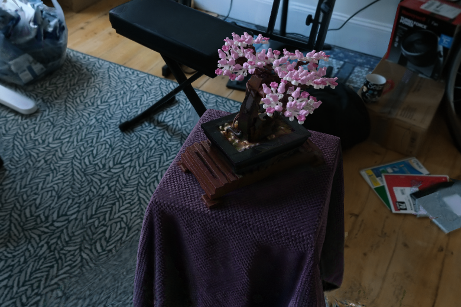
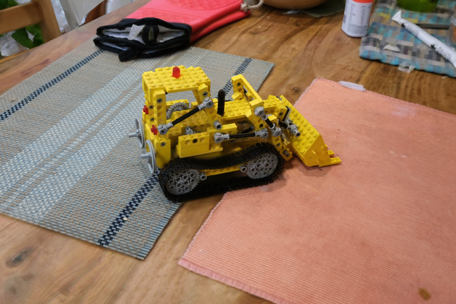
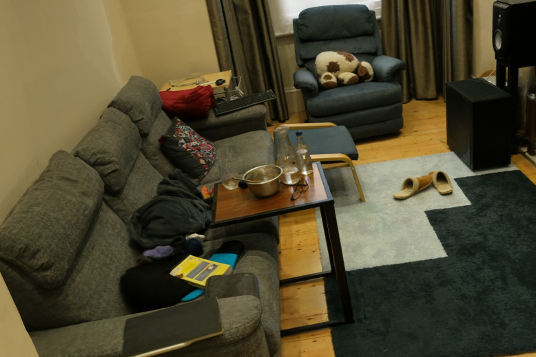
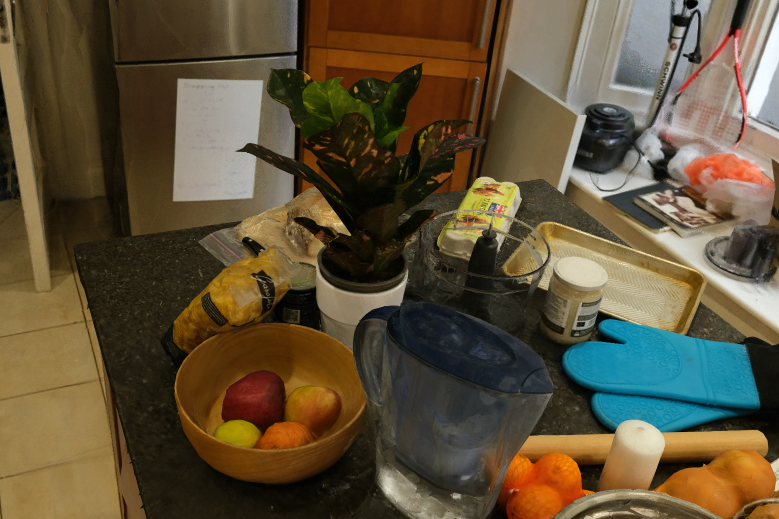

We start training both the appearance fcolor and geometry fsdf representations for a large-scale scene using volumetric rendering (shown in orange). Then, our method extracts the mesh from fsdf and significantly simplifies its structure, resulting in the lightweight mesh M (shown in blue). Finally, we jointly train vertex deformation Δx and fcolor computed from appearance modeling.
|
 Garden |
 Bicycle |
 Stump |
|
 Bonsai |
 Kitchen |
 Room |
 Counter |
@inproceedings{choi2024ltm,
title = {LTM: Lightweight Textured Mesh Extraction and Refinement of Large Unbounded Scenes for Efficient Storage and Real-time Rendering},
author = {Jaehoon Choi and Rajvi Shah and Qinbo Li and Yipeng Wang and Ayush Saraf and Changil Kim and Jia-Bin Huang Dinesh Manocha and Suhib Alsisan and Johannes Kopf},
booktitle = {CVPR},
year = {2024}
}